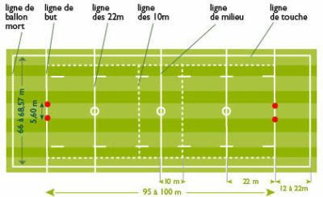

Règles du jeu
Le flag rugby se joue en équipes mixtes, où le plaquage traditionnel est remplacé par l'arrachage des drapeaux. Les passes sont essentielles pour progresser.
Chaque équipe doit marquer des essais tout en respectant les règles de fair-play. Le jeu est adapté en fonction des âges et des capacités des joueurs.
Ce sport met en avant la communication, la stratégie et le plaisir du jeu.
Technique individuelle de passe courte :

Terrain de flag rugby:
